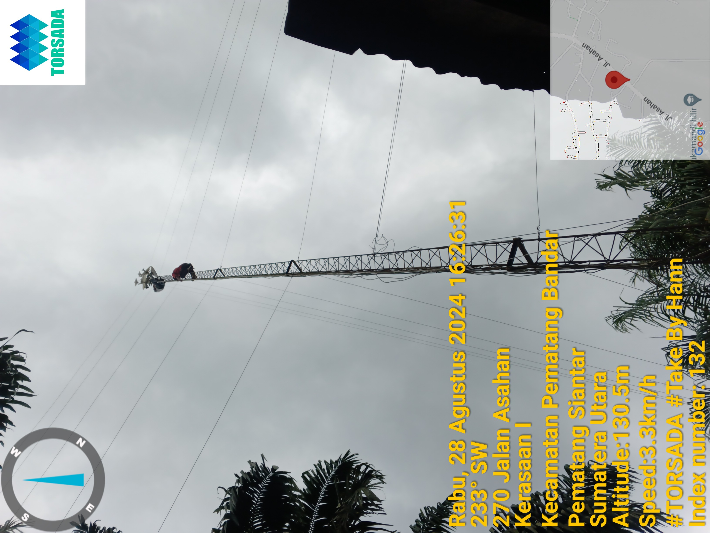

REP (REPAIR)
Rep Atau Biasa Disebut Repair Yaitu Memperbaiki Suatu Perangkat 4 okt, 2024
Perbaikan jaringan Wi-Fi adalah langkah penting untuk memastikan koneksi internet yang stabil dan cepat. Beberapa masalah umum yang sering terjadi meliputi sinyal yang lemah, koneksi yang terputus-putus, kerusakan kepada perangkat, atau perangkat yang tidak dapat terhubung. Untuk mengatasi masalah ini, langkah pertama adalah memeriksa perangkat router/modem/kabel/dll. dan memastikan bahwa semua kabel terhubung dengan baik. Selanjutnya, melakukan reboot pada router/modem dapat membantu memperbaiki masalah sementara. Jika masalah masih berlanjut, mengecek pengaturan jaringan, seperti saluran Wi-Fi yang digunakan, bisa sangat membantu; terkadang,gangguan dari jaringan lain dapat mempengaruhi kualitas sinyal. Selain itu, pastikan firmware router/modem diperbarui untuk mendapatkan performa terbaik dan fitur keamanan terbaru. Jika semua langkah ini tidak berhasil, mungkin saatnya untuk mempertimbangkan penggantian perangkat atau memanggil teknisi profesional untuk analisis lebih lanjut. Dengan melakukan maintenance dan perbaikan yang tepat, jaringan Wi-Fi di rumah dapat berfungsi dengan optimal.
BERIKUT CONTOH FOTO REPAIR:
